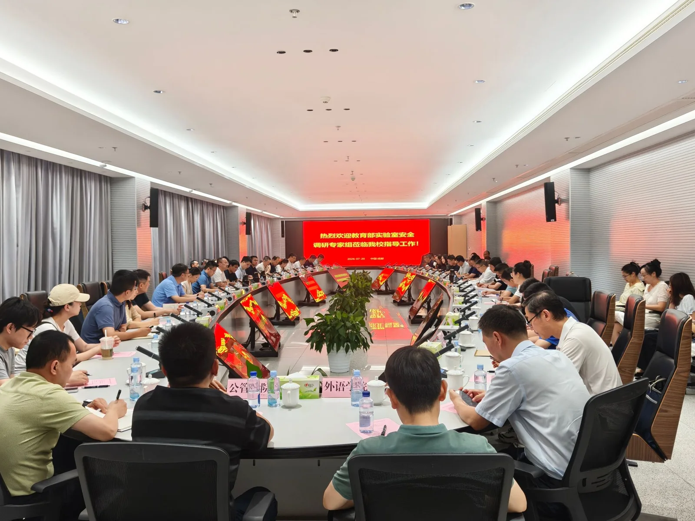
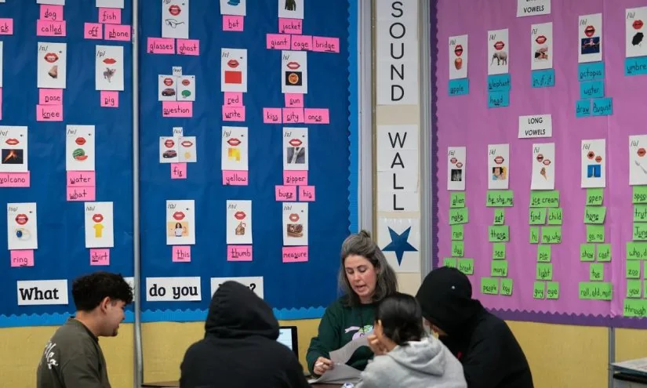

01
中国城乡教育差距：政策如何“填沟”
教育公平政策正在从硬件转向软件，但挑战依然存在。

根据新浪网的一篇报道，中国近年来推出了一系列教育公平政策，旨在缩小城乡教育资源差距。这些政策包括加强乡村学校建设、推动优质教师向农村流动、以及利用数字化手段共享课程资源。例如，一些省份实施了“县管校聘”制度，让教师在县域内轮岗，避免优质师资过度集中在城区。此外，国家通过专项拨款改善农村学校的实验室、图书馆和网络设施。但报道也指出，硬件改善相对容易，真正的难点在于留住好老师。乡村教师待遇低、晋升通道窄，导致很多优秀教师流向城市。另一个问题是，农村学生虽然有了平板电脑和网络，但缺乏有效的学习指导和家庭支持，数字鸿沟可能演变为新的不平等。总体来看，政策方向正确，但需要更精细的执行和持续投入。
从具体机制看，集团化办学是近年来的重要举措。城市优质学校与乡村薄弱学校结对，通过管理输出、教师交流、课程共享等方式带动后者提升。例如，一些地区实行“一校多区”模式，由名校校长统一管理多个校区，教师定期轮岗。这种模式在一定程度上缓解了“择校热”，但也面临执行阻力：优秀教师不愿长期留在乡村，因为生活不便、子女教育机会少。此外，数字化手段如“双师课堂”让乡村学生能同步听城市名师讲课，但本地辅导老师的能力参差不齐，互动效果有限。
对于普通家庭，尤其是县域家庭，这些政策意味着什么？首先，家长不必盲目追求城市学校。如果当地有集团化办学或结对帮扶项目，可以优先选择参与这些项目的学校，因为它们往往能获得更多资源支持。其次，利用免费线上资源补充学习是可行的，但需要家长或监护人监督。例如，国家中小学智慧教育平台提供了大量优质课程，但农村孩子缺乏使用习惯和指导。建议家长每天固定时间陪孩子一起观看并讨论，逐步培养自主学习能力。最后，关注学校的师资稳定性：如果一所学校教师流动频繁，可能意味着管理或待遇有问题，需要谨慎选择。
长期来看，教育公平需要从“硬件均衡”走向“软件均衡”。政策制定者应着力提升乡村教师待遇和职业发展空间，比如提供住房补贴、职称评审倾斜、培训机会等。同时，家长和社区也应参与进来，比如成立家长委员会监督学校管理，或组织志愿者辅导课后学习。教育公平不是一蹴而就的，但每一步努力都能让更多孩子受益。
伊恩的观察
对于县域家庭，可以主动了解当地集团化办学或结对帮扶项目，利用免费线上资源补充学习。家长不必盲目追求城市学校，关注学校师资稳定性和教学管理比硬件更重要。
02
高校实验室安全：被忽视的“教育公平”维度
实验室安全不仅关乎科研，也影响学生的实践机会。

电子科技大学的一则新闻显示，教育部本年度高校实验室安全调研组到该校开展调研检查。这看似是常规工作，但背后涉及教育公平的一个侧面：不同高校的实验室条件差异巨大。一些地方院校实验室设备陈旧、安全投入不足，学生可能无法获得充分的实验训练，甚至面临安全隐患。而重点高校则拥有更先进的设施和更严格的管理。这种差距会影响理工科学生的实践能力和就业竞争力。教育部加强检查，旨在推动所有高校提升实验室安全水平，保障学生平等接受高质量实验教育的机会。
具体来说，实验室安全包括硬件设施（如通风系统、消防设备、应急喷淋）、管理制度（如危化品存储、操作规范、培训考核）以及人员意识。在资源匮乏的学校，可能连基本的防护装备都不足，学生只能“纸上谈兵”。而在顶尖高校，学生从大一开始就能进入国家级实验室，接触前沿设备。这种差距在就业时尤为明显：企业更青睐有实操经验的毕业生。
对于理工科学生，择校时除了看排名，也应关注实验室条件和安全记录。可以通过学校官网、学长学姐或公开的评估报告了解情况。在校期间，主动参加实验室安全培训，熟悉操作规程，不仅能保护自己，也能提升动手能力。如果学校条件有限，可以尝试申请到合作企业或研究所实习，弥补实践短板。
从政策层面，教育部加强检查是好事，但更重要的是建立长效机制。例如，设立专项经费支持地方院校更新设备，建立区域共享实验室平台，让不同学校的学生都能使用高端仪器。同时，将实验室安全纳入高校评估体系，倒逼学校重视。对于学生而言，安全意识和实践能力是终身受益的，不应因学校条件而放弃。
伊恩的观察
理工科学生在择校时，除了看排名，也应关注实验室条件和安全记录。在校生可以主动参与实验室安全培训，利用学校资源提升动手能力。
03
国际暑期学校：拔尖人才培养的“快车道”
暑期学校为优秀学生提供了跨文化交流和前沿学习的机会。
中国海洋大学、哈尔滨工业大学等多所高校在2026年夏季举办了国际暑期学校，聚焦基础学科和前沿领域。例如，海大的暑期学校围绕海洋科学，邀请国际学者授课，并组织学生进行实地考察。哈工大的暑期学校则吸引了1400余名中外学子参与。这些项目通常面向研究生和高年级本科生，选拔标准较高，但一旦入选，学生可以接触到顶尖师资、国际同行和最新研究动态。对于普通学生来说，这可能显得“遥不可及”，但这类项目也在逐步扩大覆盖面，部分学校开始向低年级和校外学生开放少量名额。
暑期学校的机制通常是：由高校或科研机构主办，围绕特定主题设计课程和活动，为期一到四周。学生通过申请或推荐入选，学费往往由主办方承担或提供补贴。除了学术讲座，还包括小组讨论、实验操作、企业参观等。这种沉浸式学习能快速提升学生的专业视野和跨文化沟通能力。
对于在校大学生，如何抓住这类机会？首先，提前关注目标院校的暑期学校通知，通常每年春季发布。准备申请材料时，突出自己的学术兴趣和相关经历。即使无法参加，也可以利用公开的课程录像或线上讲座拓展视野。例如，许多暑期学校会录制部分课程并上传网络。其次，如果本校有类似项目，积极申请；如果没有，可以跨校申请，部分项目接受外校学生。
从教育公平角度看，暑期学校确实存在“精英化”倾向，但它的存在本身也是一种激励：让优秀学生更快成长。对于普通学生，更重要的是培养主动学习的习惯。比如，利用MOOC平台学习国际名校课程，加入学术社团，或参与导师的科研项目。这些经历同样能提升竞争力。
伊恩的观察
如果你是在校大学生，可以提前关注目标院校的暑期学校通知，准备申请材料。即使无法参加，也可以利用公开的课程录像或线上讲座拓展视野。
04
加州阅读投资：科学教学法的胜利
加州通过推广“自然拼读”等循证教学法，提升了学生阅读成绩。

据The 74报道，加州近年来投入大量资金用于提升儿童读写能力，效果初显。该州推广了基于科学研究（如自然拼读法）的阅读教学，取代了之前流行的“整体语言法”。数据显示，采用新方法的学区，尤其是低收入家庭学生占比高的学区，阅读成绩有明显提升。但报道也指出，仍有约三分之一的教师培训项目在阅读教学方面评级为“F”，说明师资培训仍需加强。加州的案例表明，教育公平不仅需要资源投入，更需要正确的教学方法。
自然拼读法（Phonics）强调字母与发音的对应关系，帮助学生“见词能读”。而整体语言法（Whole Language）主张在语境中自然习得阅读，但缺乏系统性。加州在2019年通过立法，要求所有小学采用循证阅读教学，并拨款数亿美元用于教师培训和教材更新。到2026年，一些学区的三年级阅读达标率提高了十个百分点以上，尤其对英语学习者和低收入家庭学生效果显著。
对于家长，这意味着什么？首先，关注孩子学校使用的阅读教学方法。如果学校仍在使用过时的“猜词法”（如根据图片猜测单词），可以主动与老师沟通，了解是否有自然拼读的补充材料。其次，在家可以通过自然拼读练习辅助孩子，比如使用字母卡片、拼读游戏等。早期阅读干预效果最好，不要等到三年级才重视。如果孩子已经出现阅读困难，可以寻求专业评估和辅导。
从政策层面，加州的经验值得借鉴：教育公平需要基于证据的决策。中国在推广阅读教学时，也应注重科学方法的普及，避免盲目跟风。同时，教师培训是关键，只有老师掌握了正确方法，才能真正惠及学生。
伊恩的观察
家长可以关注孩子的阅读教学方式。如果学校仍在使用过时的“猜词法”，可以主动与老师沟通，或在家通过自然拼读练习辅助孩子。早期阅读干预效果最好，不要等到三年级才重视。
05
北卡乡村托育：财政补贴如何“救火”
联邦疫情资金耗尽后，乡村托育机构面临生存危机。
据The 74报道，北卡罗来纳州新预算为乡村托育企业提供了期待已久的财政援助。此前，联邦疫情补贴在2025年结束，导致许多乡村托育中心陷入财务困境。例如，海伍德县的Silver Bluff Kids早教中心虽然评级很高，但经营者玛丽·穆迪表示，疫情期间的补助用完后面临巨大压力。新预算旨在稳定这些机构的运营，确保农村家庭能获得可负担的托育服务。这不仅是经济问题，更是教育公平问题——早期教育质量直接影响儿童后续发展。
乡村托育的困境在于：运营成本高（租金、人员工资、保险等），但家长支付能力有限。疫情补贴结束后，许多中心不得不提高收费或缩减服务，导致部分家庭无法负担。北卡新预算包括直接补贴给托育机构、提供税收减免、以及资助培训项目。这些措施有助于降低家庭支出，同时保证服务质量。
对于有婴幼儿的家庭，可以查询当地是否有托育补贴或税收优惠。例如，一些州提供“儿童保育补贴”给低收入家庭，或者允许托育费用抵税。选择托育机构时，除了价格，应关注师生比（理想是1:4以下）、教师资质（是否有早期教育背景）和课程设计（是否包含语言、认知、社交等发展领域）。即使没有补贴，也可以利用社区资源补充早期刺激，如图书馆的故事时间、公园的亲子活动等。
从长期看，政府应建立稳定的托育资助体系，避免依赖临时拨款。同时，支持乡村托育机构开展家长教育，帮助家庭在家中进行早期启蒙。教育公平从0岁开始，每一个投资都值得。
伊恩的观察
对于有婴幼儿的家庭，可以查询当地是否有托育补贴或税收优惠。选择托育机构时，除了价格，应关注师生比、教师资质和课程设计。即使没有补贴，也可以利用社区资源（如图书馆故事时间）补充早期刺激。
无障碍文字记录
伊恩 你好，欢迎收听伊恩每日·教育。今天是2026年7月24日。这一期，我们聊聊一个老话题，但它的每一次进展都值得被认真对待——教育公平。最近有几条新闻，从国内到国外，从政策到实践，都指向同一个方向：让每个孩子，无论出生在乡村还是城市，都能获得有质量的教育。我会把事实先摆出来，再一起看看这些变化对我们每个人意味着什么。
伊恩 今天我们来聊聊教育公平。最近新浪网有篇文章，讲的是国家如何通过政策缩小城乡教育资源差距。文章提到，近年来国家推动县域义务教育优质均衡发展，具体措施包括教师轮岗、数字化教学、改善乡村学校硬件等。比如，一些省份实施了“县管校聘”，让优秀教师定期到乡村学校任教；同时，国家智慧教育平台让乡村学生也能共享名校课程资源。这些举措的直接受益者是县域内的中小学生和家长，尤其是那些过去不得不把孩子送到县城或城市读书的家庭。
但政策落地过程中也存在误区。比如，有的地方把“均衡”理解为平均主义，忽视了乡村学校特色化发展的需求；还有的地方数字化设备配了，但教师使用能力跟不上。长期来看，教育公平的核心不是“一样”，而是“每个孩子都能获得适合他的发展机会”。
那么，这些政策对普通人意味着什么？首先，对于县域内的学生，他们现在有机会在家门口享受到更优质的教育资源，减少了因资源不均导致的升学差距。对于家长，他们不必再为了孩子上学而举家搬迁或支付高昂的择校费。对于乡村教师，轮岗制度带来了新的教学理念和职业发展机会，但也可能面临适应新环境的挑战。
然而，我们也要看到，政策的有效性取决于执行细节。比如，教师轮岗是否真正实现了优质师资的流动，还是流于形式？数字化设备是否真正被有效利用，还是成了摆设？这些问题需要持续关注。
从长期成长和教育公平的角度，我认为有几点值得思考：第一，教育公平不是削峰填谷，而是让每个孩子都能找到适合自己的成长路径。乡村学校可以结合当地特色，发展劳动教育、自然教育等，而不是一味模仿城市模式。第二，家长和教师需要转变观念，从“唯分数论”转向关注孩子的综合素养和个性发展。第三，政策制定者应更多倾听基层声音，避免“一刀切”，让政策真正落地生根。
总之，教育公平是一个系统工程，需要政府、学校、家庭和社会共同努力。作为普通人，我们可以从自身做起，关注身边的教育资源分配，支持那些为教育公平努力的人。毕竟，每一个孩子的未来，都值得被认真对待。
听众 伊恩你好，我孩子在县城读小学，学校配了智慧大屏，但老师基本不用，还是照本宣科。这种公平是不是形式大于内容？
伊恩 你这个问题很真实。设备到位只是第一步，关键在教师培训和教学方法的改变。你可以做几件事：第一，主动和班主任沟通，了解学校是否有教师数字素养培训计划；第二，联合其他家长向学校建议，组织教师外出学习或引入线上教研资源；第三，在家帮孩子利用国家智慧教育平台上的免费课程做补充。公平不是等来的，是家长、学校、政策三方一起推出来的。
伊恩 今天来聊一条来自美国加州的新闻。The 74报道，加州在早期阅读上的大规模投资正在见效。加州政府投入了数十亿美元用于教师培训、阅读教练和基于科学阅读教学法的课程改革。数据显示，部分学区的阅读成绩有所提升。但报告也指出，进展不均衡，尤其是英语学习者和低收入家庭的孩子进步较慢。
先看事实。这项投资的核心是“科学阅读教学法”，它强调音素意识、自然拼读、流利度、词汇和阅读理解这五个支柱。加州政府从2020年左右开始推行，投入资金培训教师，并在学校配备阅读教练，帮助老师把理论落地。数据来源是加州教育部的标准化考试，确实看到一些学区，尤其是中产社区，三年级学生的阅读 proficiency 提高了几个百分点。但与此同时，低收入学区和非英语母语学生的进步幅度要小得多。
这意味着什么？首先，砸钱不是万能的。阅读能力的提升需要持续数年的系统支持，不是一年培训就能解决的。教师需要时间消化新方法，学校需要稳定的阅读教练，家庭也需要配合。其次，公平问题依然突出。英语学习者可能面临双重挑战：既要学语言，又要学阅读。低收入家庭的孩子可能缺乏课外阅读资源和家长陪伴。
对普通人来说，这条新闻有几点启示。如果你是家长，可以主动了解学校是否采用循证阅读教学法。比如，问问老师：孩子学拼读吗？有没有定期的阅读评估？在家也可以通过亲子共读、讨论故事内容来培养孩子的理解力。不用刻意教，每天15分钟，指着字读，问“你觉得接下来会发生什么”，就能帮孩子建立语言和思维的连接。
误区在于，有人以为只要投入资金，成绩就会立刻飙升。实际上，教育是慢功夫。加州的经验告诉我们，系统改革需要耐心，而且必须针对不同群体的需求设计差异化支持。对于政策制定者，这意味着不能一刀切；对于家长，这意味着放下焦虑，关注日常的微小进步。
长期来看，阅读能力是教育公平的基石。一个孩子如果在三年级前无法流利阅读，后续学习会越来越吃力。加州的投资方向是对的，但接下来的挑战是如何让每一分钱都花在最需要的地方。这不仅是加州的问题，也是全球教育面临的共同课题。
伊恩 今天我们来聊聊美国北卡罗来纳州农村托育机构的一个好消息。7月23日，The 74报道，北卡州新预算终于为农村托育机构提供了他们多年寻求的财政援助。自2025年联邦疫情资金耗尽后，许多农村托育中心面临关闭风险。新预算包括提高补贴率、提供运营补助金和启动资金。
先看事实：北卡州预算中明确增加了对农村托育的投入，具体措施包括提高低收入家庭托育补贴标准、为现有托育中心提供运营补助金，以及为新开办的农村托育机构提供启动资金。这些资金旨在缓解农村地区“托育荒漠”问题——许多农村家庭因附近没有托育中心而无法正常工作。
谁受影响？首先是农村家庭，尤其是双职工家庭和单亲家庭。托育中心关闭意味着他们可能不得不减少工作时间或放弃工作，影响家庭收入。其次是托育从业者，他们多为女性，工资低、工作不稳定，资金支持能稳定就业。最后是农村社区，托育中心不仅是照顾孩子的地方，也是社区经济活力的组成部分。
利弊与误区：利好是资金直接缓解了燃眉之急，但误区在于认为资金能解决所有问题。农村托育还面临师资短缺、生源波动、运营成本高等长期挑战。补贴提高可能吸引更多家庭，但若师资跟不上，质量反而下降。此外，启动资金鼓励新机构进入，但缺乏后续支持可能导致“开得快、关得也快”。
分层可执行方法：对于家长，可以主动参与社区托育委员会或家长咨询组，监督资金使用，确保用于提升师资培训、改善设施。对于从业者，应联合其他农村托育机构，争取长期稳定的资金承诺，而非一次性补助。对于政策制定者，需配套师资培训计划和灵活的生源管理机制，避免资金浪费。
长期成长与公平：农村托育的公平性不仅在于“有地方去”，更在于“有质量地成长”。资金是起点，但需要持续投入和社区参与。北卡州的尝试为其他地区提供了参考：短期救助与长期制度建设结合，才能真正缩小城乡早期教育差距。
总结：北卡州预算为农村托育注入了急需的资金，但家长和从业者需保持警惕，确保每一分钱都用在刀刃上。教育公平从起点开始，而起点就在这些小小的托育中心里。
听众 我是刚毕业的师范生，想去乡村教书，但担心职业发展受限。有什么建议吗？
伊恩 你的选择很有意义。乡村学校确实可能平台小，但也有独特优势：第一，你可能更快获得独立教学和班级管理的机会，成长速度会很快；第二，现在很多地方有乡村教师支持计划，包括职称评审倾斜、培训机会和住房补贴；第三，你可以利用在线教研社群和远程培训，打破地域限制。建议你入职后主动申请参与课题或教学比赛，同时保持与高校和发达地区教师的联系。教育公平需要你这样的年轻人。
伊恩 最近，中国海洋大学、哈尔滨工业大学、湖南大学等高校陆续举办了国际暑期学校，聚焦基础学科和前沿科学。以中国海洋大学为例，2026年基础学科拔尖学生国际暑期学校暨海洋科学国际青年学者交流营，面向全国乃至全球的优秀本科生和研究生，提供学术讲座、实验实践和国际交流机会。这类项目通常持续一到两周，邀请国内外知名学者授课，学生有机会接触学科前沿、参与课题讨论。
这类暑期学校对参与学生而言，是拓宽学术视野、建立国际网络的绝佳机会。但名额有限，选拔标准较高，通常要求成绩排名靠前、有研究经历或导师推荐。普通学生可能觉得遥不可及，甚至产生“只有学霸才能参加”的误解。
误区在于，有人把暑期学校当成“镀金”履历的工具，而忽视了真正的收获在于学术启发和思维训练。如果只是为了一张证书，却没能深入参与讨论、主动提问，那收获会大打折扣。
对于在校大学生，可以这样准备：第一，关注本校或合作院校的官方通知，提前了解申请时间和材料要求；第二，提前准备成绩单、推荐信和研究计划，尤其是个人陈述要突出学术兴趣和匹配度；第三，即使未能入选，也可以利用公开的讲座资源自学——很多暑期学校会录制部分课程并上传网络。长期来看，参与这类项目有助于培养学术素养、建立人脉，为深造或科研打下基础。但也要理性看待：暑期学校只是成长路径之一，并非唯一通道。真正的成长来自持续的学习和思考，而非一次短期活动。
伊恩 今天有一条看似行政的新闻，但和每一位理工科研究生、科研人员都息息相关——教育部2026年高校实验室安全调研组，到电子科技大学开展了调研检查。这可不是走形式，而是全国高校实验室安全专项工作的一部分。
先看事实：7月23日，教育部调研组进入电子科大，对实验室安全管理制度、危化品管理、设备操作培训、应急预案等进行全面检查。这不是孤立事件，近年来高校实验室事故时有发生，从火灾到化学品泄漏，甚至人员伤亡，每一次都让人痛心。因此，教育部从2025年起就加大了对实验室安全的督导力度，这次调研正是延续。
那么，这个检查到底在查什么？简单说，就是“人、物、制”三个层面。人：师生是否经过安全培训，是否持证上岗；物：危化品存放是否合规，通风、消防、应急设备是否到位；制：有没有明确的安全责任人，应急预案是否定期演练。检查结果会直接影响高校的科研经费、项目申报甚至招生资格。
对普通学生和科研人员来说，这意味着什么？最直接的变化是：操作流程会更严格。比如以前可能随手放试剂，现在必须分类存放、双人双锁；以前觉得“没事”的违规操作，现在会被记录甚至处罚。有同学会觉得“麻烦”“耽误时间”，但这是一个典型的误区——安全规定从来不是为了限制你，而是为了保护你。每一次事故背后，往往都有“以前都这么干”的侥幸心理。
代价是什么？如果忽视安全，轻则实验失败、设备损坏，重则烧伤、中毒甚至失去生命。2018年北京某高校实验室爆炸，造成一名博士后死亡，就是因违规操作引燃易燃溶剂。这样的悲剧，完全可以避免。
那么，作为普通人，我们能做什么？如果你是学生或科研人员，请主动参加安全培训，熟悉实验室的应急喷淋、洗眼器、灭火器位置，养成“实验前查MSDS（化学品安全技术说明书）、实验中戴好防护、实验后清理台面”的习惯。如果你是管理者，请把安全投入看作必要成本，而不是额外负担。
长期来看，实验室安全文化的建立，不仅保护个人，也提升科研质量。一个规范、有序的实验室，数据更可靠，成果更可信。教育公平不只是城乡资源差距，也包括每个学生在校园里的基本安全保障。
所以，下次看到安全通知，别只当它是“麻烦”，它可能是你和你同学的生命线。
听众 我是一名研究生，实验室安全培训每次都走形式，怎么办？
伊恩 走形式的培训确实让人无奈，但安全是自己的。你可以做三件事：第一，主动向导师或实验室负责人索要详细的安全手册，自己先学透；第二，联合同学向学院建议，邀请有经验的校外专家来做实操演练；第三，每次实验前花两分钟检查通风橱、灭火器、洗眼器是否可用。安全不是给别人看的，是保护自己的底线。
伊恩 回顾今天的五条新闻，它们共同指向一个主题：教育公平不是一句口号，而是每一项政策、每一分投入、每一次教学改进的累积。从城乡资源均衡到早期阅读投资，从农村托育支持到高校学术机会，再到实验室安全——公平体现在每一个细节里。对于你我而言，与其焦虑，不如行动：家长可以更主动地参与学校沟通，教师可以积极利用培训资源，学生可以抓住每一个学习机会。教育公平，我们每个人都是参与者。
伊恩 感谢你收听今天的伊恩每日·教育。如果你有关于教育公平的具体问题，欢迎在评论区留言，我会在后续节目中回应。我们明天见。